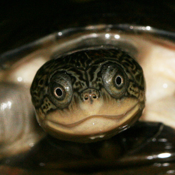
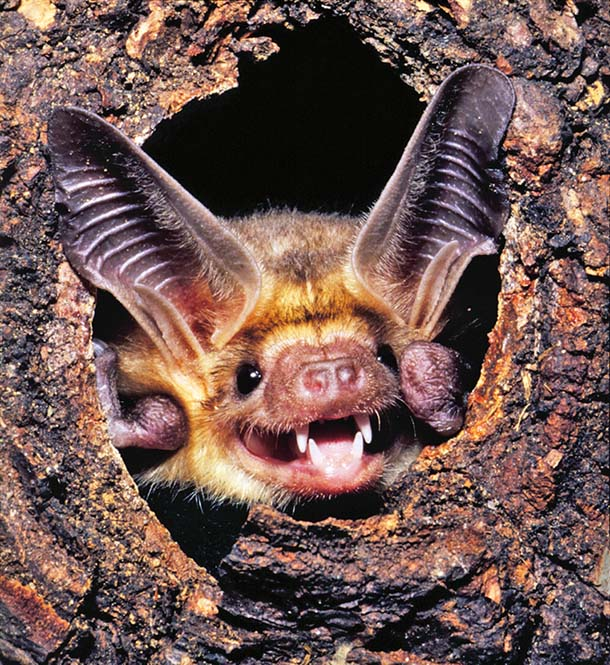

People
|
Michael Landis
Principal Investigator
I'm interested in learning how evolutionary processes behave and how Earth's biodiversity has changed over time.
|
|

|
Mariana Braga
Postdoctoral Researcher
My research studies the evolution of butterfly-host plant interactions and butterfly diversification by combining host use records, phylogenetic information, network theory, and computer simulations. I am currently developing probabilistic models to help us understand the distribution of ecological interactions across space and time.
|
|  |
(open position)
Postdoctoral Researcher
This research position will remain open until filled. A general description for the position is described here. Contact Michael with questions if interested.
|
|  |
(open position)
PhD Student
This research position is available starting Fall 2020. Application details are here. Interested applicants are urged to first contact Michael before applying.
|